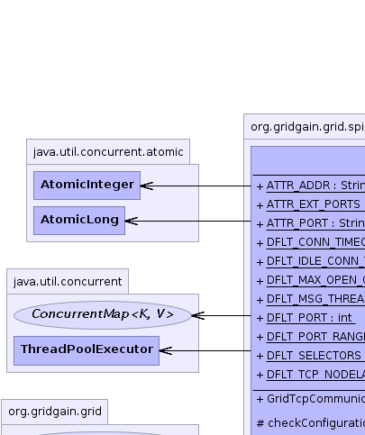
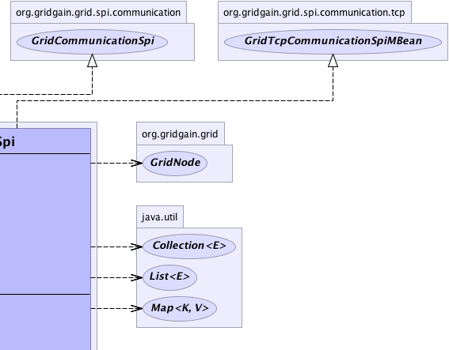
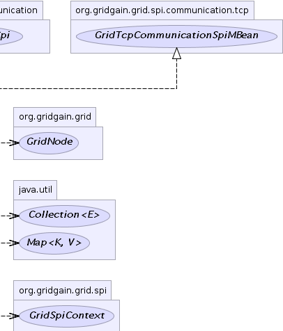
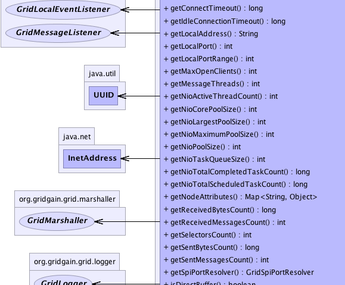
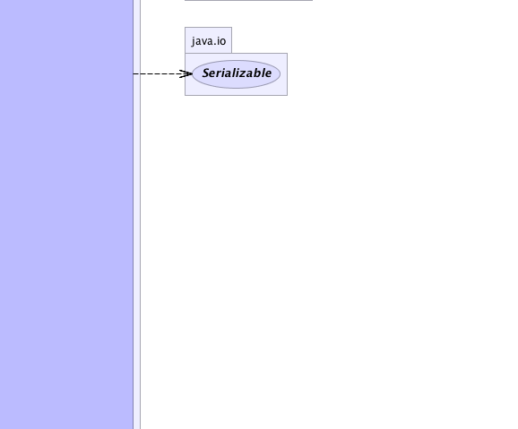
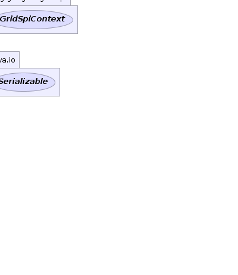
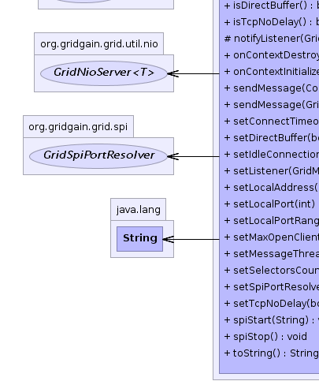

org.gridgain.grid.spi.GridSpiAdapter
org.gridgain.grid.spi.communication.tcp.GridTcpCommunicationSpi
org.gridgain.grid.spi.GridSpiAdapter
org.gridgain.grid.spi.communication.tcp.GridTcpCommunicationSpi
|
GridGain™ 3.6.0c
Community Edition |
|||||||||
| PREV CLASS NEXT CLASS | FRAMES NO FRAMES | |||||||||
| SUMMARY: NESTED | FIELD | CONSTR | METHOD | DETAIL: FIELD | CONSTR | METHOD | |||||||||
java.lang.Object
@GridSpiInfo(author="GridGain Project",
url="www.gridgain.org",
email="support@gridgain.com",
version="3.0")
@GridSpiMultipleInstancesSupport(value=true)
public class GridTcpCommunicationSpiGridTcpCommunicationSpi is default communication SPI which uses TCP/IP protocol and Java NIO to communicate with other nodes.
To enable communication with other nodes, this SPI adds GridTcpCommunicationSpi.ATTR_ADDR
and GridTcpCommunicationSpi.ATTR_PORT local node attributes (see GridNode.attributes().
At startup, this SPI tries to start listening to local port specified by
GridTcpCommunicationSpi.setLocalPort(int) method. If local port is occupied, then SPI will
automatically increment the port number until it can successfully bind for
listening. GridTcpCommunicationSpi.setLocalPortRange(int) configuration parameter controls
maximum number of ports that SPI will try before it fails. Port range comes
very handy when starting multiple grid nodes on the same machine or even
in the same VM. In this case all nodes can be brought up without a single
change in configuration.
This SPI caches connections to remote nodes so it does not have to reconnect every
time a message is sent. By default, idle connections are kept active for
GridTcpCommunicationSpi.DFLT_IDLE_CONN_TIMEOUT period and then are closed. Use
GridTcpCommunicationSpi.setIdleConnectionTimeout(long) configuration parameter to configure
you own idle connection timeout. In some cases network performance may be increased
if more that one active TCP connection is used. By default, SPI uses GridTcpCommunicationSpi.DFLT_MAX_OPEN_CLIENTS
as maximum open clients. Use GridTcpCommunicationSpi.setMaxOpenClients(int) configuration parameter
to configure maximum count of open clients per remote node.
GridTcpCommunicationSpi.setLocalAddress(String))GridTcpCommunicationSpi.setLocalPort(int))GridTcpCommunicationSpi.setLocalPortRange(int)GridTcpCommunicationSpi.setSpiPortResolver(GridSpiPortResolver)GridTcpCommunicationSpi.setMessageThreads(int))GridTcpCommunicationSpi.setIdleConnectionTimeout(long))GridTcpCommunicationSpi.setDirectBuffer(boolean))GridTcpCommunicationSpi.setSelectorsCount(int))GridTcpCommunicationSpi.setMaxOpenClients(int))GridTcpCommunicationSpi commSpi = new GridTcpCommunicationSpi(); // Override local port. commSpi.setLocalPort(4321); GridConfigurationAdapter cfg = new GridConfigurationAdapter(); // Override default communication SPI. cfg.setCommunicationSpi(commSpi); // Start grid. GridFactory.start(cfg);
<bean id="grid.custom.cfg" class="org.gridgain.grid.GridConfigurationAdapter" singleton="true">
...
<property name="communicationSpi">
<bean class="org.gridgain.grid.spi.communication.tcp.GridTcpCommunicationSpi">
<!-- Override local port. -->
<property name="localPort" value="4321"/>
</bean>
</property>
...
</bean>

For information about Spring framework visit www.springframework.org
| Wiki | |
| Forum |
GridCommunicationSpi
|  |  |  |
|  |  |  |
|  |  |
| Field Summary | |
|---|---|
static String |
ATTR_ADDR
Node attribute that is mapped to node IP address (value is comm.tcp.addr). |
static String |
ATTR_EXT_PORTS
Node attribute that is mapped to node's external ports numbers (value is comm.tcp.ext-ports). |
static String |
ATTR_PORT
Node attribute that is mapped to node port number (value is comm.tcp.port). |
static int |
DFLT_CONN_TIMEOUT
Default connection timeout (value is 1000ms). |
static int |
DFLT_IDLE_CONN_TIMEOUT
Default idle connection timeout (value is 30000ms). |
static int |
DFLT_MAX_OPEN_CLIENTS
Default maximum count of simultaneously open client for one node (value is 1). |
static int |
DFLT_MSG_THREADS
Number of threads responsible for handling messages. |
static int |
DFLT_PORT
Default port which node sets listener to (value is 47100). |
static int |
DFLT_PORT_RANGE
Default local port range (value is 100). |
static int |
DFLT_SELECTORS_CNT
Default count of selectors for tcp server equals to the count of processors in system. |
| Constructor Summary | |
|---|---|
GridTcpCommunicationSpi()
|
|
| Method Summary | |
|---|---|
protected void |
checkConfigurationConsistency(GridNode node,
boolean starting)
Checks remote node SPI configuration and prints warnings if necessary. |
int |
getConnectTimeout()
Gets connect timeout used when establishing connection with remote nodes. |
protected List<String> |
getConsistentAttributeNames()
Returns back a list of attributes that should be consistent for this SPI. |
long |
getIdleConnectionTimeout()
Gets maximum idle connection time upon which idle connections will be closed. |
String |
getLocalAddress()
Gets local host address for socket binding. |
int |
getLocalPort()
Gets local port for socket binding. |
int |
getLocalPortRange()
Gets maximum number of local ports tried if all previously tried ports are occupied. |
int |
getMaxOpenClients()
Gets maximum count of simultaneously open TCP clients for one remote node. |
int |
getMessageThreads()
Gets number of threads used for handling NIO messages. |
int |
getNioActiveThreadCount()
Returns the approximate number of threads that are actively processing NIO tasks. |
int |
getNioCorePoolSize()
Returns the core number of NIO threads. |
int |
getNioLargestPoolSize()
Returns the largest number of NIO threads that have ever simultaneously been in the pool. |
int |
getNioMaximumPoolSize()
Returns the maximum allowed number of NIO threads. |
int |
getNioPoolSize()
Returns the current number of NIO threads in the pool. |
int |
getNioTaskQueueSize()
Gets current size of the NIO queue size. |
long |
getNioTotalCompletedTaskCount()
Returns the approximate total number of NIO tasks that have completed execution. |
long |
getNioTotalScheduledTaskCount()
Returns the approximate total number of NIO tasks that have been scheduled for execution. |
Map<String,Object> |
getNodeAttributes()
This method is called before SPI starts (before method GridSpi.spiStart(String)
is called). |
long |
getReceivedBytesCount()
Gets received bytes count. |
int |
getReceivedMessagesCount()
Gets received messages count. |
int |
getSelectorsCount()
Gets count of selectors used in TCP server. |
long |
getSentBytesCount()
Gets sent bytes count. |
int |
getSentMessagesCount()
Gets sent messages count. |
GridSpiPortResolver |
getSpiPortResolver()
Gets port resolver for ports mapping determination. |
boolean |
isDirectBuffer()
Gets flag that indicates whether direct or heap allocated buffer is used. |
protected void |
notifyListener(org.gridgain.grid.spi.communication.tcp.GridTcpCommunicationMessage msg)
|
void |
onContextDestroyed()
Callback invoked prior to stopping grid before SPI context is destroyed. |
void |
onContextInitialized(GridSpiContext spiCtx)
Callback invoked when SPI context is initialized. |
void |
sendMessage(Collection<? extends GridNode> destNodes,
Serializable msg)
Sends given message to destination nodes. |
void |
sendMessage(GridNode destNode,
Serializable msg)
Sends given message to destination node. |
void |
setConnectTimeout(int connTimeout)
Sets connect timeout used when establishing connection with remote nodes. |
void |
setDirectBuffer(boolean directBuf)
Sets flag to allocate direct or heap buffer in SPI. |
void |
setIdleConnectionTimeout(long idleConnTimeout)
Sets maximum idle connection timeout upon which a connection to client will be closed. |
void |
setListener(GridMessageListener lsnr)
Set communication listener. |
void |
setLocalAddress(String localAddr)
Sets local host address for socket binding. |
void |
setLocalPort(int localPort)
Sets local port for socket binding. |
void |
setLocalPortRange(int localPortRange)
Sets local port range for local host ports (value must greater than or equal to 0). |
void |
setMaxOpenClients(int maxOpenClients)
Sets the maximum count of simultaneously open clients per remote node. |
void |
setMessageThreads(int msgThreads)
Number of threads used for handling messages received by NIO server. |
void |
setSelectorsCount(int selectorsCnt)
Sets the count of selectors te be used in TCP server. |
void |
setSpiPortResolver(GridSpiPortResolver portRsvr)
Sets port resolver for ports mapping determination. |
void |
spiStart(String gridName)
This method is called to start SPI. |
void |
spiStop()
This method is called to stop SPI. |
String |
toString()
|
| Methods inherited from class org.gridgain.grid.spi.GridSpiAdapter |
|---|
assertParameter, configInfo, createSpiAttributeName, getAuthor, getGridGainHome, getLocalNodeId, getName, getSpiContext, getStartTimestamp, getStartTimestampFormatted, getUpTime, getUpTimeFormatted, getVendorEmail, getVendorUrl, getVersion, injectables, registerMBean, setJson, setName, startInfo, startStopwatch, stopInfo, unregisterMBean |
| Methods inherited from class java.lang.Object |
|---|
clone, equals, finalize, getClass, hashCode, notify, notifyAll, wait, wait, wait |
| Methods inherited from interface org.gridgain.grid.spi.GridSpi |
|---|
getName |
| Methods inherited from interface org.gridgain.grid.spi.GridSpiJsonConfigurable |
|---|
setJson |
| Methods inherited from interface org.gridgain.grid.spi.GridSpiManagementMBean |
|---|
getAuthor, getGridGainHome, getLocalNodeId, getName, getStartTimestamp, getStartTimestampFormatted, getUpTime, getUpTimeFormatted, getVendorEmail, getVendorUrl, getVersion |
| Field Detail |
|---|
public static final int DFLT_MSG_THREADS
public static final String ATTR_ADDR
public static final String ATTR_PORT
public static final String ATTR_EXT_PORTS
public static final int DFLT_PORT
public static final int DFLT_IDLE_CONN_TIMEOUT
public static final int DFLT_CONN_TIMEOUT
public static final int DFLT_MAX_OPEN_CLIENTS
public static final int DFLT_SELECTORS_CNT
public static final int DFLT_PORT_RANGE
GridTcpCommunicationSpi.setLocalPortRange(int) for details.
| Constructor Detail |
|---|
public GridTcpCommunicationSpi()
| Method Detail |
|---|
@GridSpiConfiguration(optional=true) @GridLocalHostResource public void setLocalAddress(String localAddr)
localAddr - IP address. Default value is any available local
IP address.public String getLocalAddress()
getLocalAddress in interface GridTcpCommunicationSpiMBean@GridSpiConfiguration(optional=true) public void setMessageThreads(int msgThreads)
If not provided, default value is GridTcpCommunicationSpi.DFLT_MSG_THREADS.
msgThreads - Number of threads.public int getMessageThreads()
getMessageThreads in interface GridTcpCommunicationSpiMBean@GridSpiConfiguration(optional=true) public void setLocalPort(int localPort)
If not provided, default value is GridTcpCommunicationSpi.DFLT_PORT.
localPort - Port number.public int getLocalPort()
getLocalPort in interface GridTcpCommunicationSpiMBean@GridSpiConfiguration(optional=true) public void setLocalPortRange(int localPortRange)
GridTcpCommunicationSpi.setLocalPort(int)} is occupied,
implementation will try to increment the port number for as long as it is less than
initial value plus this range.
If port range value is 0, then implementation will try bind only to the port provided by
GridTcpCommunicationSpi.setLocalPort(int) method and fail if binding to this port did not succeed.
Local port range is very useful during development when more than one grid nodes need to run on the same physical machine.
If not provided, default value is GridTcpCommunicationSpi.DFLT_PORT_RANGE.
localPortRange - New local port range.public int getLocalPortRange()
getLocalPortRange in interface GridTcpCommunicationSpiMBean@GridSpiConfiguration(optional=true) public void setSpiPortResolver(GridSpiPortResolver portRsvr)
portRsvr - Port resolver.public GridSpiPortResolver getSpiPortResolver()
getSpiPortResolver in interface GridTcpCommunicationSpiMBean@GridSpiConfiguration(optional=true) public void setIdleConnectionTimeout(long idleConnTimeout)
If not provided, default value is GridTcpCommunicationSpi.DFLT_IDLE_CONN_TIMEOUT.
idleConnTimeout - Maximum idle connection time.public long getIdleConnectionTimeout()
getIdleConnectionTimeout in interface GridTcpCommunicationSpiMBean@GridSpiConfiguration(optional=true) public void setConnectTimeout(int connTimeout)
0 is interpreted as infinite timeout.
If not provided, default value is GridTcpCommunicationSpi.DFLT_CONN_TIMEOUT.
connTimeout - Connect timeout.public int getConnectTimeout()
getConnectTimeout in interface GridTcpCommunicationSpiMBean@GridSpiConfiguration(optional=true) public void setDirectBuffer(boolean directBuf)
true, then SPI will use ByteBuffer.allocateDirect(int) call.
Otherwise, SPI will use ByteBuffer.allocate(int) call.
If not provided, default value is true.
directBuf - Flag indicates to allocate direct or heap buffer in SPI.public boolean isDirectBuffer()
isDirectBuffer in interface GridTcpCommunicationSpiMBean@GridSpiConfiguration(optional=true) public void setMaxOpenClients(int maxOpenClients)
GridTcpCommunicationSpi.DFLT_MAX_OPEN_CLIENTS.
maxOpenClients - Maximum count of open TCP clients per node.public int getMaxOpenClients()
getMaxOpenClients in interface GridTcpCommunicationSpiMBean@GridSpiConfiguration(optional=true) public void setSelectorsCount(int selectorsCnt)
GridTcpCommunicationSpi.DFLT_SELECTORS_CNT.
selectorsCnt - Selectors count.public int getSelectorsCount()
getSelectorsCount in interface GridTcpCommunicationSpiMBeanpublic void setListener(GridMessageListener lsnr)
setListener in interface GridCommunicationSpilsnr - Listener to set or null to unset the listener.public int getNioActiveThreadCount()
getNioActiveThreadCount in interface GridTcpCommunicationSpiMBeanpublic long getNioTotalCompletedTaskCount()
getNioTotalCompletedTaskCount in interface GridTcpCommunicationSpiMBeanpublic int getNioCorePoolSize()
getNioCorePoolSize in interface GridTcpCommunicationSpiMBeanpublic int getNioLargestPoolSize()
getNioLargestPoolSize in interface GridTcpCommunicationSpiMBeanpublic int getNioMaximumPoolSize()
getNioMaximumPoolSize in interface GridTcpCommunicationSpiMBeanpublic int getNioPoolSize()
getNioPoolSize in interface GridTcpCommunicationSpiMBeanpublic long getNioTotalScheduledTaskCount()
getNioTotalScheduledTaskCount in interface GridTcpCommunicationSpiMBeanpublic int getNioTaskQueueSize()
getNioTaskQueueSize in interface GridTcpCommunicationSpiMBeanpublic int getSentMessagesCount()
getSentMessagesCount in interface GridTcpCommunicationSpiMBeanpublic long getSentBytesCount()
getSentBytesCount in interface GridTcpCommunicationSpiMBeanpublic int getReceivedMessagesCount()
getReceivedMessagesCount in interface GridTcpCommunicationSpiMBeanpublic long getReceivedBytesCount()
getReceivedBytesCount in interface GridTcpCommunicationSpiMBeanpublic Map<String,Object> getNodeAttributes() throws GridSpiException
GridSpi.spiStart(String)
is called). It allows SPI implementation to add attributes to a local
node. Kernel collects these attributes from all SPI implementations
loaded up and then passes it to discovery SPI so that they can be
exchanged with other nodes.
getNodeAttributes in interface GridSpigetNodeAttributes in class GridSpiAdapterGridSpiException - Throws in case of any error.
public void spiStart(String gridName)
throws GridSpiException
spiStart in interface GridSpiGridSpiException - Throws in case of any error during SPI start.gridName - Name of grid instance this SPI is being started for
(null for default grid).
public void onContextInitialized(GridSpiContext spiCtx)
throws GridSpiException
This method is invoked after GridSpi.spiStart(String) method is
completed, so SPI should be fully functional at this point. Use this
method for post-start initialization, such as subscribing a discovery
listener, sending a message to remote node, etc... }
onContextInitialized in interface GridSpionContextInitialized in class GridSpiAdapterGridSpiException - If context initialization failed (grid will be stopped).spiCtx - Spi context.
public void spiStop()
throws GridSpiException
Note that this method can be called at any point including during recovery of failed start. It should make no assumptions on what state SPI will be in when this method is called.
spiStop in interface GridSpiGridSpiException - Thrown in case of any error during SPI stop.public void onContextDestroyed()
If GridSpiAdapter is used for SPI implementation, then it will
replace actual context with dummy no-op context which is usually good-enough
since grid is about to shut down.
onContextDestroyed in interface GridSpionContextDestroyed in class GridSpiAdapter
protected void checkConfigurationConsistency(GridNode node,
boolean starting)
checkConfigurationConsistency in class GridSpiAdapternode - Remote node.starting - Flag indicating whether this method is called during SPI start or
during node joined event.
public void sendMessage(GridNode destNode,
Serializable msg)
throws GridSpiException
sendMessage in interface GridCommunicationSpiGridSpiException - Thrown in case of any error during sending the message.
Note that this is not guaranteed that failed communication will result
in thrown exception as this is dependant on SPI implementation.destNode - Destination node.msg - Message to send.public void sendMessage(Collection<? extends GridNode> destNodes, Serializable msg) throws GridSpiException
sendMessage in interface GridCommunicationSpiGridSpiException - Thrown in case of any error during sending the message.
Note that this is not guaranteed that failed communication will result
in thrown exception as this is dependant on SPI implementation.destNodes - Destination nodes.msg - Message to send.protected void notifyListener(org.gridgain.grid.spi.communication.tcp.GridTcpCommunicationMessage msg)
msg - Communication message.protected List<String> getConsistentAttributeNames()
getConsistentAttributeNames in class GridSpiAdapterpublic String toString()
toString in class Object
|
GridGain™ 3.6.0c
Community Edition |
|||||||||
| PREV CLASS NEXT CLASS | FRAMES NO FRAMES | |||||||||
| SUMMARY: NESTED | FIELD | CONSTR | METHOD | DETAIL: FIELD | CONSTR | METHOD | |||||||||
|
GridGain - Real Time Big Data
|
|

|
|